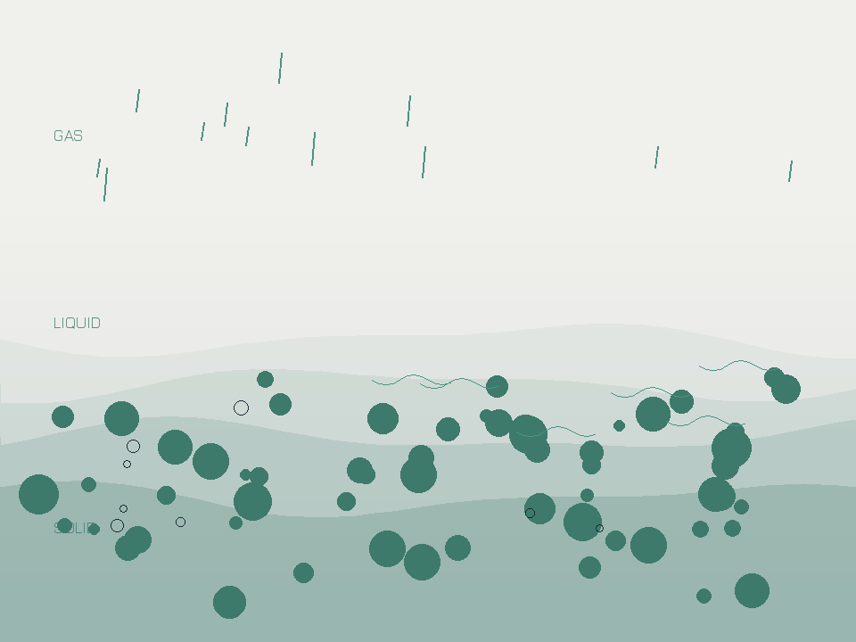
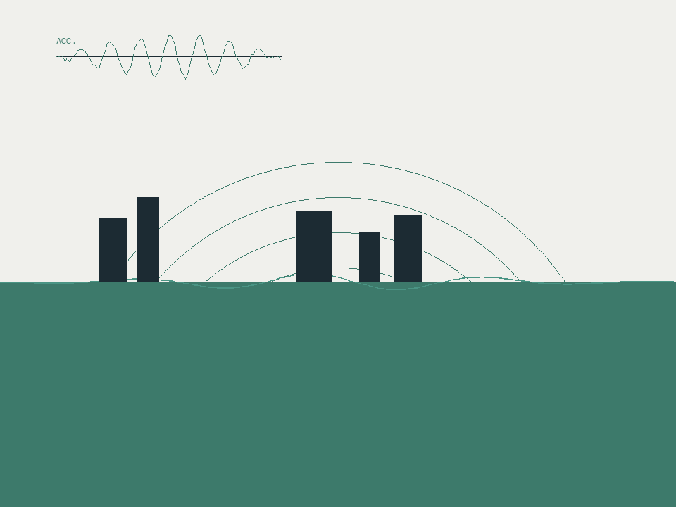
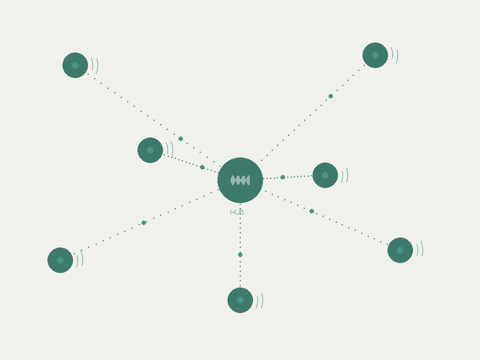
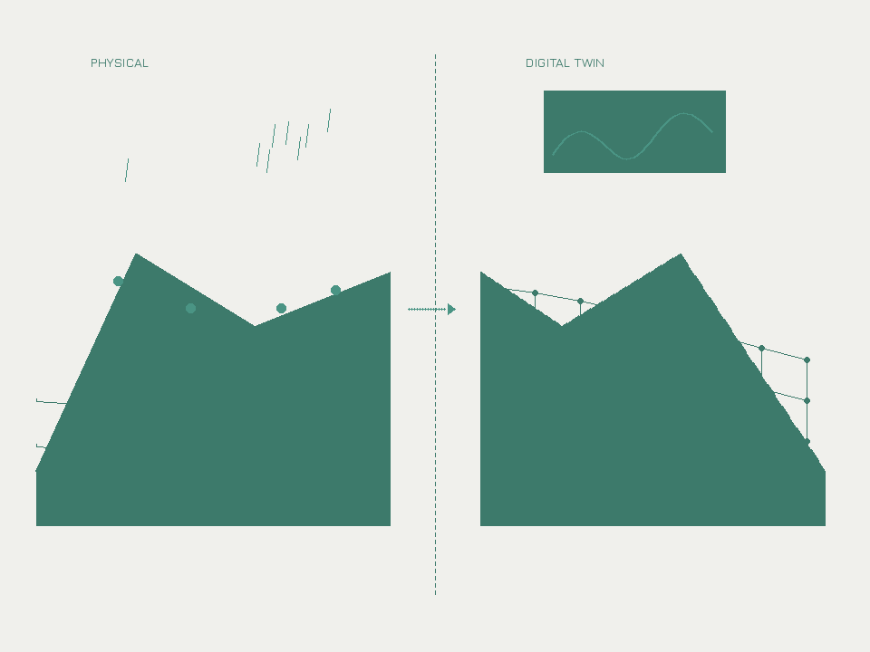

Four complementary directions, one goal — understanding real soil behaviour and applying it to engineering practice.
Investigating the coupled solid-liquid-gas response in soils under extreme climate conditions. This provides the physical foundation for understanding the safety and serviceability of geotechnical infrastructure under climate change.

Taiwan sits on the Pacific Ring of Fire. We are committed to enriching experimental databases, improving measurement techniques, and developing numerical models to characterise soil behaviour under seismic conditions.

Advancing geotechnical field monitoring through IoT sensing and AI-assisted analysis. Moving from traditional data collection to data-driven decision making.

Integrating laboratory testing, monitoring data, and numerical simulation to build digital replicas of infrastructure. This is the ultimate integration of the previous three directions — predicting time-dependent performance, anticipating extreme events, and planning maintenance strategies.

Funded by the National Science and Technology Council (NSTC). Targeting rainfall-driven unsaturated slopes, this project develops three core technologies — advanced testing, numerical simulation, and field monitoring — to establish a methodological foundation for lifecycle performance tracking of slopes.
Slopes age like people — the same rainfall that was harmless ten years ago may not be today. Our job is to track that change.
Design assumes soil parameters remain constant, but in reality: short-term rainfall infiltration reduces strength, and long-term wetting-drying cycles degrade microstructure.
Using novel measurement tools to systematically quantify biases in conventional measurement methods, and to clarify how much of the variation between different tests comes from measurement effects versus actual differences in soil behaviour.